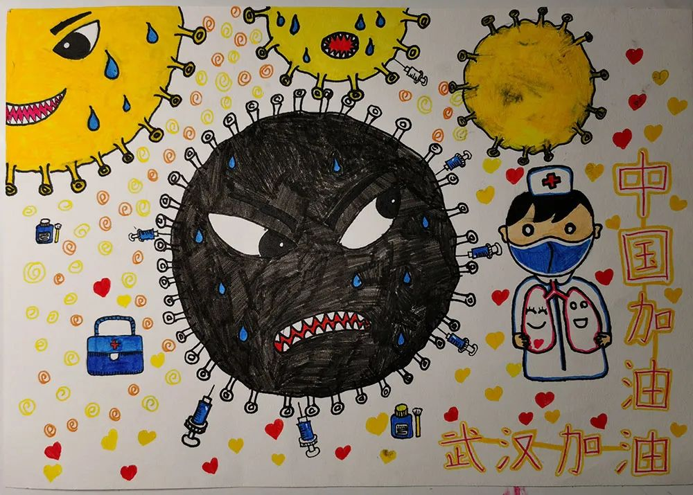
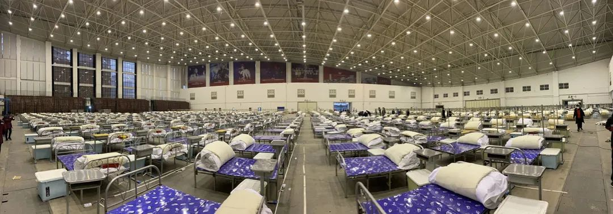
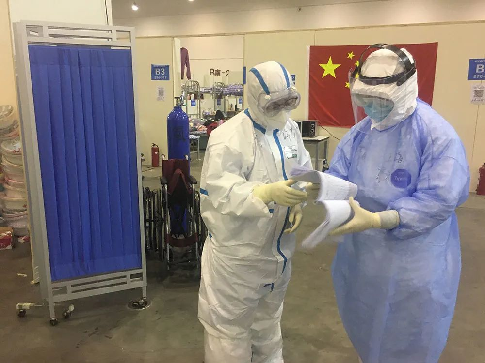
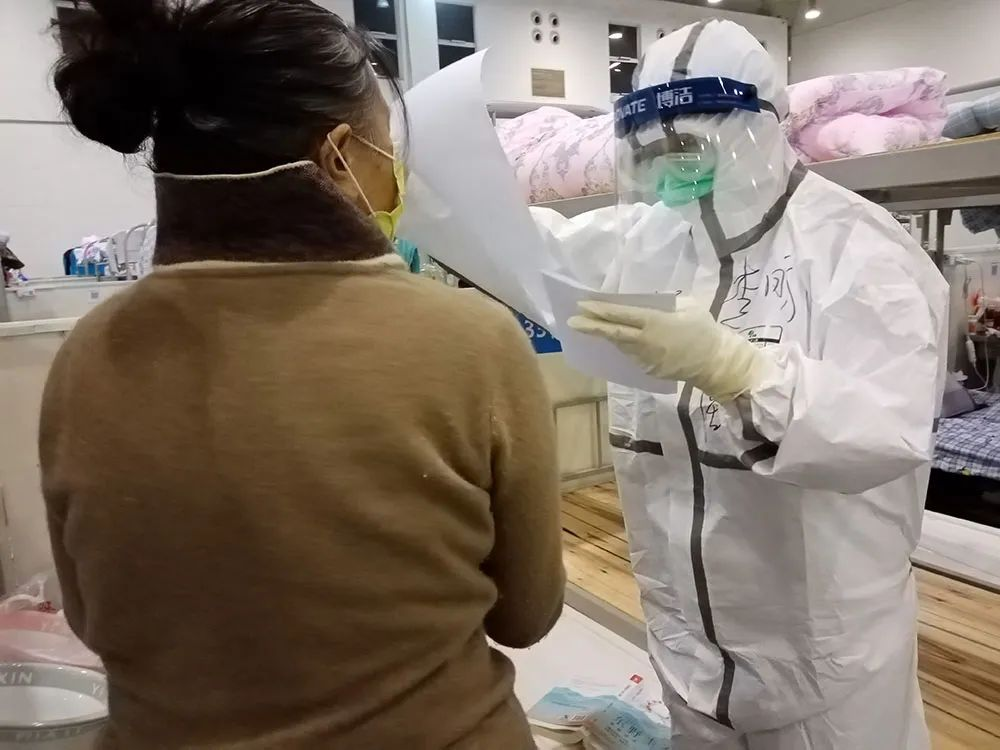
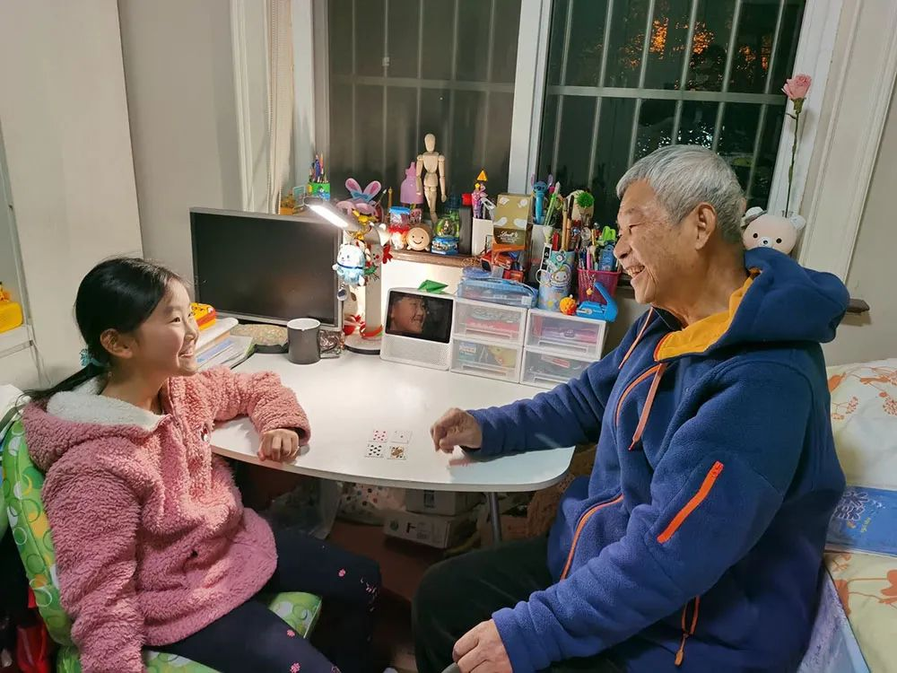

“你们是不是觉得太危险，不要我们了”
原文链接 备份链接 澎湃新闻记者 钟笑玫 方舱的晚上不关灯，墙、隔板也是一片白色。冯强第一次走进去，感到刺眼，他下意识想，有些患者也许会失眠，单调的颜色让人缺乏安全感。 冯强是同济大学附属东方医院的临床心理科医生，16天前的2月4日，他 …
澎湃新闻记者 钟笑玫 实习生 沈青青
半夜两三点醒来是常事。
摸到手机，李昕给好友发微信：“紧张怎么办？你安慰安慰我。”
对方正在熟睡，她当然知道。只不过白天紧绷的神经一松，同济大学附属东方医院援鄂医疗队女医生的担子卸下，她开始忧心女儿的学习、母亲的糖尿病和自己的安危。被压下去的焦虑、惧怕和孤独，又冒了出来。
李昕打开手机里穿脱防护服的教学视频。示范的医生曾抗击埃博拉病毒，现在在金银潭医院救治重症新冠患者。对方每示范一遍，她就在脑海里演示一遍，直到睡去。
醒来的时间是不固定的。其他医生生病、摔伤、剃头刮破皮肤或者临时没找到装备……李昕随时会接到临时值班的电话。
武汉东西湖方舱医院（又名武汉客厅方舱医院）医护人员每6小时换一次班，8至14点为早班，接下来是午班、中班和夜班。每个人相邻两次值班的时间通常间隔24至48小时。
来回路程、穿脱防护服、交接班和回酒店消毒，算上这些时间，医护人员得提前2小时准备，延迟2小时休息。如果值早班，李昕得清晨6点起床。值完中班，她凌晨四点才能躺在床上。
梦里，她的血被制成特效疫苗，就连重症患者打了也能好。最后一个患者笑嘻嘻打完后，方舱空荡荡，医护人员全都放假回家了。

李昕女儿画的卡通画，希望妈妈能治住新冠病毒。 除特殊注明，图片皆为受访者提供
1
装备
早班的闹钟会在6点将李昕从梦中唤醒。窗外昏黑一片，封城的武汉少了烟火气，也没有汽笛声。
她习惯把这个位于东西湖区酒店九楼的房间称为“家”：比起方舱医院，这里让她感到更安全。
“家”里没有早饭，为了避免上厕所和低血糖，她没喝水，干咽了两个小蛋糕。
防护用品有备无患，她左边口袋装着小瓶消毒水和眼药水，右边口袋里是口罩和抗病毒口服液。她这边把衣服塞得鼓鼓囊囊，用20个发卡固定好碎发，带上口罩，套上胶鞋，下了楼。
此时的武汉，道路空旷而冷寂，车里的医生坐在一起，忍不住“提前上班”：A患者本该两天前做的核酸检测迟迟未做，B患者因为老公去世在晚上大哭但抵触心理医生，C患者想看CT片子可方舱当时只能出具结果报告……
近20分钟后，车停了。
东西湖方舱医院二三十米外，浅咖色的医用帐篷紧挨着。一街之隔，收治重症患者的金银潭医院正俯视这片低矮建筑群。

走进方舱时，医护人员感到金银潭医院在背后给自己施压：如果患者病情加重，很快就会进入更危险的境地。澎湃新闻记者 赵思维 图
李昕记得，2月5日，她和同事花了3个多小时搭建这些帐篷。那时，舱内的电路和通风设施还在建，没有隔板。看着密密麻麻的病床，她联想到新冠病毒，头皮发麻。

方舱医院里满目皆床。
李文亮医生在2月7日凌晨离世，这则噩耗加深了李昕的不安。当晚，东西湖方舱医院收治患者，她被安排在2月8日凌晨进舱。
“要进去打仗了，突然紧张起来，万一我有什么，女儿您帮我照顾，她做您女儿，我放心。”她发消息给女儿的班主任。
她告诉了父亲自己两张银行卡的密码，说把钱留给女儿上学。“妈妈如果不在了，要照顾自己，已经是少年了，钱留着上学时候用，不要乱花。”她又叮嘱女儿。
女更衣室帐篷里，她把手机放进储物柜，换上单薄的绿色手术服，顶着寒风往入舱口奔。
东西湖方舱医院分为A、B、C三块区域，各有一个入舱口，舱口前都设有一个帐篷。每个舱每次轮班，都会有5位医生和近20名护士进去穿戴防护用品。
开舱之初，防护用品比较紧张，医护人员得适应不同规格的物资。绿色医用N95口罩第一天就被用空，只剩下了不防喷溅的白色N95口罩。再过几天，头挂式的口罩变为了耳挂式，像李昕这样耳朵比较软的人戴久了会脱落。领队也急坏了，连夜联系一家乳制品企业拆了牛奶箱的提手，用提手两端勾住口罩带子固定。
李昕第一次入舱时，帐篷还没有镜子。她按照脑子里记住的步骤，依次戴上口罩、手术帽，穿上蓝色隔离服、白色防护服，再戴上护目镜、面屏，套上手套和脚套。换口罩时，她怕交叉感染，跑到帐篷外头，在空旷处深吸一口气，再拿新的戴上。
没办法检查安全性，她也不敢进舱。幸亏一名曾经当过护士的志愿者过来，帮她整理碎发，检查口罩和护目镜的密闭情况。

医护人员正在穿防护服。其中一位的衣服上写着“春天来了”。 澎湃新闻记者 赵思维 图
后来，这个帐篷设置了物资管理员。有些女护士的耳后被口罩皮筋勒破皮，或是额头及鼻梁被护目镜压伤，能找管理员要“安普贴”。贴上这种水胶敷料，进舱后创口不会直接接触到汗水，不会感染。
负责物资管理的护士尤俪雯记得，几乎每个要“安普贴”的人声音都很小，没什么底气，仿佛是讨要一种“奢侈品”。能箍紧衣袖的外科手套、质量好的靴套、加大码的防护服，能领到的人都无比珍惜。
有次，一个女护士不小心把领来的N95口罩掉在了地上，盯着地上，半天没开口再要。尤俪雯再给了一个，对方连连说了好几声谢谢。
大约半小时后，互相在防护服上写好名字的医护人员相继入舱了。
2
战场
穿过最后一道门，李昕进入她的战场。
A舱满员后，同济大学附属东方医院援鄂医疗队被安排至B舱，和宁夏、广东、新疆等地的援鄂医疗队一起搭班。李昕每班需要负责B舱B厅中的115个患者。此外，她还要“包干”10位患者，不值班时也要用电话和微信问诊。
她此前经过的清洁区、潜在污染区、污染区由三个小房间充当。病毒会随对流的空气传播，所以房间只能单门开。
交班像是坐过山车，平稳地沟通病情一阵，又突然接到个棘手难题。有患者的丈夫去世，一直哭嚎，上个值班医生会让她联系心理医生。有患者狂躁地要求知道核酸检测结果，她也需要在查房时进行安抚。

李昕（蓝衣者）在和上一班的医生交班。
8点20分，李昕走到918病床前，开始查房。
确诊几天？现在哪里不舒服？核酸与CT做过几次了？药还够几天吃？同样的问题，李昕要问每个患者一遍，用纸笔记录下来。
病人都醒了，看见李昕，立马从床上坐起身。不管是发烧、腹泻、胸闷、缺药，还是口罩戴久了鼻腔发热、隔壁床打鼾影响睡眠，患者都会细细说给李昕。
新冠肺炎没有特效药，大多时候，李昕做的多是采集病史和倾听宽慰。
“这个病毒比较诡异。”李昕了解到，很多患者都不清楚自己是被谁传染。一名家庭主妇告诉她，自己出门买了瓶醋，印象中没跟任何人有一米内的亲密接触，回家就开始咳嗽了。
作为从医16年的心内科医生，她发现，新冠肺炎患者的心率普遍升高。她负责125个患者，其中有二十几位分别患高血压、糖尿病、冠心病患者，她可以作出针对性的诊治。
病床是由志愿者铺的，白色的床品变成了花花绿绿的。穿过病床时，会有患者撩起床单，从自制的帘子探出头来。
“不好意思医生，我这两天心跳特别快，稍微一动就到120怎么办？”一位年轻女孩忍不住“插队”。
“你有甲亢没有？”透过起雾的护目镜，李昕依稀看见女孩眼睛有点凸。
女孩称，自己患过甲亢，但已一年没有复查。应激可能刺激甲亢复发，李昕建议她每天吃一片降低心率的药。女孩想吃几天缓解后停药，李昕连忙劝“千万别减，减了跳得更快，出院了，家里人团聚了再减，好不好？”
刚查过的一个患者跑来，问她自己怎样才能出院。旁边几个病人也悄悄围了过来，都在等着李昕的回答。
事实上，方舱的医疗设备是逐渐配齐的。最开始，舱内只有一台移动车载CT，一天最多能给30个患者拍片，而且舱内医生只能看到CT报告、无法调阅片子。现在，CT增设了一台，医生可以对比片子判断病程。抢救设施也从寥寥几个氧气瓶，变成了呼吸机、除颤仪、心电监护等齐全设备。
李昕解释，只有核酸检测显示阴性才能做CT。CT结果正常后，患者如果核酸检测再是阴性，病程和症状符合规定标准，才能出院。核酸检测会出现一定的假阴性率，有些患者前后两次结果常常一阴一阳。按照这套出院标准，患者得多些耐心才行。
“这是现在临时搭建的医院，请你理解。”李昕重复这句话。
3
“历劫”
在李昕的“作战规划”里，目前舱内约1400名患者赶紧出院，再收进来一批新的。这样正常周转三遍，这个战役就差不多能胜利了。
穿着密不透风的防护服，李昕在开着24℃暖气的舱里不停地走，一身大汗。不断有床位靠后的患者等着急了跑来等着，或者前头查过的患者过来催药。有的患者去办公室找不到她，凶完护士又焦急地过来催问结果。
戴着口罩说话声音闷着很难被听清，有患者喜欢凑到李昕耳边说话。靠太近有感染风险，李昕拉开距离，被防护服裹着大声说话。嘴越来越干，不停说话时唇部皮肤有拉扯感。口罩和护目镜压住鼻子，用嘴呼吸一口，连口腔都变得干燥。
满身的装备像是枷锁。
头戴式口罩的皮筋没有拉到头顶，边走边往下滑，她也没法用手触碰，只能保持头部僵直。护目镜太紧，勒得有些大脑缺氧。流鼻涕也不能擦，挂不住了再吸一下。
憋尿是常有的事。有的护士甚至会因为憋尿太久而尿血。身边有患者和其他医护，即使穿着尿不湿，李昕也不好意思尿，怕防护服破掉，也不太敢做蹲下的动作。实在憋不住，李昕会在路过隔板时站定尿一次。
遇上生理期，女性医护人员“像是历劫”。经血不受控地流到卫生巾上，平常3至4小时能更换一次，进方舱前后近10个小时，血又漏到安心裤上。走起路来，像是穿了一条黏糊糊的血裤。
不停把药发到患者手里，处理医嘱，给患者办入院和出院手续，记录患者没洗发水等琐碎问题……护士有时比医生还要忙碌。不吃不喝体力不支，再加上痛经，曾有生理期的护士晕倒在舱内。
3小时后，等最后一个病床的患者说完“谢谢李医生”后，李昕回办公室坐下开临时医嘱。
护目镜起雾，涂了沐浴液、碘伏消毒液也撑不了多久，只能360度转头寻找没有雾的角落。看电脑屏幕更是让人眼睛发晕。
李昕把查房收集的开药、开检查、身体不适等情况录入。手指戴着两层手套，汗水黏糊糊的，打字成了很痛苦的事。

查房的李昕。
查房时不在的患者会过来补充情况。还有许多患者喜欢溜达，路过一次办公桌就催问李昕一次检验结果。护士会带着患者做呼吸操，分散他们注意力，被“解救”的李昕就抓紧时间敲医嘱。

李昕（蓝衣者）在电脑上敲医嘱。桌上摆着一瓶给病人喝的水。李昕自嘲“我们眼里只有酒精，没有水”。
有次，一位患者站在办公室门口，远远地叫她“李医生”。那个阿姨的亲人都在隔离，只剩两个85岁以上的老人待在家中。因为胰岛素笔里的笔芯只够两天的量，实在没办法才找她求助。怕传染病毒给她，宁愿隔着距离大声说话。
“她是没办法才会来找我的。所以我一定要尽全力帮她。”李昕的母亲也患有糖尿病，没有胰岛素会酮症酸中毒。临行前，她让母亲储备了几个月的药物才放心离开。
方舱医院糖尿病人不多，她问遍整个方舱的医疗队，打电话给药物调度员，经过两天，给阿姨找到了配对的笔芯。后来，她将阿姨转到了定点医院。
“恭喜你，可以出院了。”将近11点，方舱广播里响起5个人的名字。所有患者一起鼓掌。李昕听到里面有个她负责病区的患者，托护士让那位女患者等她把出院小结送过去再走。
等她再去时，病床上只剩下女患者的棕色羽绒衣。“简直是拔腿就跑。”李昕乐得像打了胜仗的将军。
4
突发
计划外的情况随时出现。
方舱的深夜不熄灯，明亮如白昼。李昕第一次值班那天，社区凌晨还在往方舱送病人。方舱医院临时决定，先让所有患者进舱睡觉，第二天再补办住院手续和开医嘱。李昕所在的A厅离通道最近，患者进门就躺上空床，不到一小时，她所负责的区域一下就住进了180多位患者。
凌晨2点35分，一名A舱A厅24床的患者突然呼吸困难，血氧饱和度降到89%。
李昕急得后背冒冷汗。办公室墙上的联系电话，她一个个打过去，转诊电话忙音，终于打通了调度电话，但对方又说晚上无法转诊病人。
再跑回患者床前，他已经喘得厉害，无法躺平了。“没法抢救啊。”李昕回忆，当时舱内没有氧气瓶和呼吸机，万一患者不行，只能靠心肺复苏。她站在那，像个没有子弹的士兵。
一位夜间巡回的护士长“救”了她。
一个100多斤的蓝色氧气瓶，被护士长从舱外的抢救室一路滚来患者床前。等到3点半，两人终于给患者吸上了氧。半个小时后，患者的血氧饱和度升到94%，李昕才松了口气。
紧接着，36床的患者体温升至39.9℃，李昕又回到紧绷状态。当时许多药物还无法及时拿到，只能进行物理降温，拿冷毛巾敷在患者额头上。李昕守着，等到这位22岁的患者体温降下来再离开。
喊声、哭声也是一种警报。
曾有位感染新冠肺炎的精神科医生，在病房激动地喊叫。见到她和另外两位医生，那个男人“扑通”一声给他们跪下，甩出两本医生证件，说自己没有发热但测出核酸阳性，哭诉自己没病，请求出舱。
随后两天，尽管他仍然觉得自己没有感染新冠肺炎，但也逐渐接受了舱内的生活。
一个失去丈夫的女人晚上突然哭起来。李昕到时，女人头发乱作一团，泪水滴到口罩里。病友递给她纸巾，女人也不伸手接。李昕问她喝不喝水，也不理人。
“想哭就哭吧。”李昕杵在那，听女人哭喊。丈夫患重症新冠肺炎，就在对面的金银潭医院离世，人走了，她连最后一面也没见上。
20分钟后，女人哭累了，把头蒙到被子里，露出一只眼睛。看女人闭上眼，李昕走开了。到了后半夜，她蹑手蹑脚再去时，女人已是一副熟睡的样子。等第二天心理医生冯强进舱询问，女人对他哭泣，但已经不承认丈夫去世了。

方舱外的日落时分。
慌忙之中，李昕的鞋套在舱内掉过一次。这种“瞬时裸奔”的情况可能是致命的。她站在原地不敢再走，一个宁夏的护士看到了，赶快去办公室给她拿来酒精紧急消毒，找了个医用垃圾袋套上应急。
脱防护服比穿要更严谨，这是所有人的共识。出舱的医务人员通道分为缓冲区、一脱间、二脱间和三脱区。两个安保人员守在出舱口，每次只能放两个人。
有次来接班的医生找不到鞋套迟来了，李昕在集中出舱的护士后面排队，等了两个多小时。
缓冲区没有灯，漆黑一片，为了防止气溶胶传播病毒，要站定一刻钟才能进入一脱间。
动作要轻缓，步骤顺序错了，危险就会到来。放医疗废物的垃圾桶堆满了，多的垃圾堆得人高。靠近时，李昕只能屏息。遇上手部消毒液、口罩被拿完的情况，人相当于被“卡住”，既不能退回污染更重的区域，也不能把病毒带到清洁区。
印象最深刻的那次，李昕站在那，等了半小时管理员才把外科口罩拿来。三脱区的门是敞开的，风灌进来，已经脱掉防护服的她冷得打哆嗦。
5
喘息
重压之下，李昕偶尔也会与舱内的工作者聊天，在舱外放松。
夜班时，患者大部分都睡了。没有暖气的那几天，李昕挨着电暖炉，坐在凳子上稍微打个盹。
武汉下雪那天，同事在群里说“寒流来了记得添衣”。李昕穿上保暖内衣，但舱内暖气调高了温度，热得她全身汗湿，“感觉都要人间蒸发了”。她从患者通道往舱外走，去透个风。
出门左边是厕所，右边是洗漱台，中间是露天的走道。夜里人很少，两个男清洁工看见她，帮她搬了把椅子。
“你现在燥热，别说话，坐下来。”两人看见李昕身上写着“湖北媳妇”，跟她拉了些家常，说了声“谢谢你来武汉帮忙”就走了。
黄微1990年出生，是武汉市东西湖区城市管理执法局的一名清洁工。为了不让排泄物漫出，他每天要和同事工作4个多小时，清理10到12吨的排泄物。
“粪便的味道穿过口罩直刺鼻喉，口罩似乎还放大了这浓烈的气味，只叫人恶心想吐。” 黄微忍受着这种“永生不忘”的味道，在防护服的束缚下消毒、抬水管、吸粪。
防护服并不防水，可冲厕所、消毒都要跟水打交道。吸粪时也会有尿液溅到身上。尽管听说病毒可能通过粪口传播，但黄微觉得，也没必要太过害怕或者计较这些事情，“医生都勇敢冲在前面呢”。
从舱外回来，李昕到处转转，偶尔会看见守着进出通道的安保蹲靠着墙打盹。
曹怀应属于因“封城”回不了家的人。看到方舱医院招募安保的信息，35岁的他和同事从公司宿舍来这里报了名。
“就像在家里面一样，反正有你忙不完的事。”6个小时的值班时间里，曹怀应有时运送物资，坐岗守门，无聊了就去给饮水机更换桶装水。
一个患者因为看不惯另一个患者往埋着电线的沟里倒水，吵了起来。旁边劝架的人喊“四面八方的人来支援我们，再吵要丢武汉的脸啦！”他看见了，赶忙把两人拉回自己床位。
方言是最困扰他的事情。方舱里头老人多，有次，一位老太太向他要家属送过来的东西，可他并没有收到。老太太听不懂他的普通话，说着一口方言，跟在他后头嘀咕了半小时才离开。
大多数，曹怀应都会收到一句“谢谢，辛苦了”，觉得自己来做志愿者也不算白来，“最起码别人知道你辛苦，知道你累”。
对于李昕来讲，累着从舱里出去是件令人愉悦的事情。
外面的空气无比清新，回到酒店摘下口罩，一口气喝下出门时剩下的半瓶可乐。那一瞬，她觉得健康活着的感觉真好。
不用值班的时间，她会写一些工作心得，写累了就在房间里跳郑多燕的减肥操。看着酒店下的篮球场，想象在那跑上一圈的滋味。有的护士在隔壁跳舞，发抖音视频给她看。房门是开着的，大家可以站在自己房门口戴着口罩聊天。

从酒店窗户往外看，足球场和篮球场显得格外“诱人”。
第一天刚到武汉的时候，李昕因为前一天还在上班，来不及回家收拾行李，只拿了医疗队发的箱子。陆陆续续地，社会捐赠的物资越来越多，李昕的房间里多了指甲剪、饼干蛋糕、洗发水、卫生巾、热水袋。
“家里吃的用的挺齐全了，感觉我可以跟对面小卖部老板PK一下。”李昕说。
她最忧心的还是女儿的学习。在她看来，四年级是个分水岭。班级群里，许多没有外出工作的家长都发了辅导督促孩子学习的时间表。
“人家在家放假三个月了，天天有人有专门盯着学习，我就觉得我女儿输了，落下了好多。”家里老人管不住孩子，老公刚从外地回来正在隔离。夜深人静时，她成了一个普通家长，在焦虑中睡去。
再次醒来的时间仍是不固定的。肯定的是，醒来之后，她又要再次抵达方舱。

元宵节那天，父亲给李昕发了一张他和李昕女儿的照片。
戳这里进入
“全国新型冠状病毒感染病例实时地图”↓↓↓
本期编辑 周玉华
推荐阅读


原文链接 备份链接 澎湃新闻记者 钟笑玫 方舱的晚上不关灯，墙、隔板也是一片白色。冯强第一次走进去，感到刺眼，他下意识想，有些患者也许会失眠，单调的颜色让人缺乏安全感。 冯强是同济大学附属东方医院的临床心理科医生，16天前的2月4日，他 …
原文链接 备份链接 还在酒店隔离的病人想进方舱，因为这里起码有药吃，有医生看，悬起的心有着落。一旦进了方舱，目标转向，变成“出去”，心又高悬，痊愈者期盼出院，重症者亟待转院。假如没有方舱，他们就无处可去。 记者 | 驳静（发自武汉） 进 …
原文链接 备份链接 澎湃新闻记者 李佳蔚 郁斐 制图 进驻武汉第一天，上海医疗队就知道，要治愈的不仅是患者身体，治愈出院也不会是服务终点。 时至今日，事实证明他们做得不赖。 2月7日，上海中山医院第四批医疗队进驻武汉大学人民医院东院，整建 …
原文链接 备份链接 住进武昌方舱的第二天，付丹看到有人在垃圾站收拾，将在地上扔得乱七八糟的垃圾捡起来放到垃圾箱里。她感到有些奇怪，清洁工怎么没有穿防护服呢。一问，原来那人是住在同一个病区的病友，住在159号床。 文***｜******* …
原文链接 备份链接 “我在窗台旁看了很长一会雪，特别想家，我们也在问什么时候结束。” “病友们觉得床上有电热毯，冷的话躲在被窝里就行了。医护人员没什么地方可以躲，所以除了个别患者有畏寒的情况，就让医护人员优先用（取暖设备）。” *“一 …